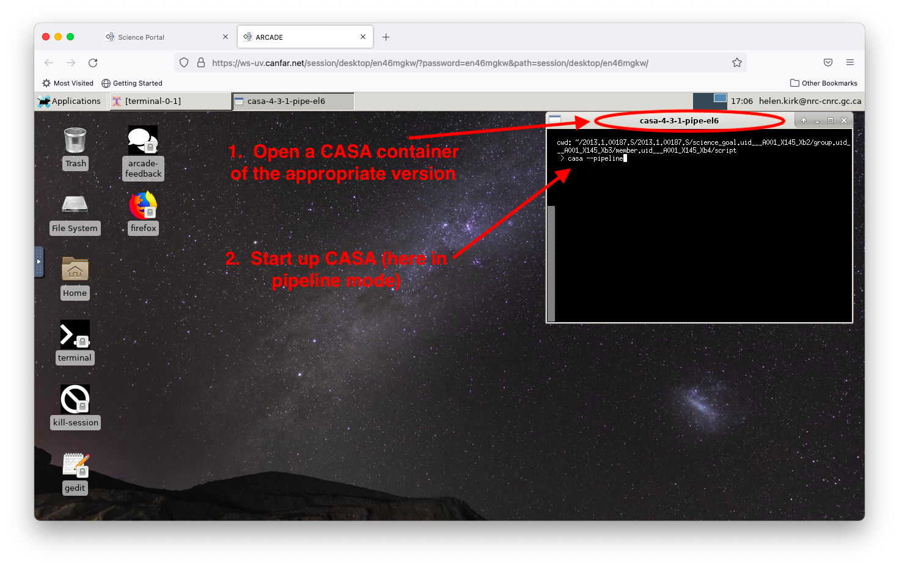
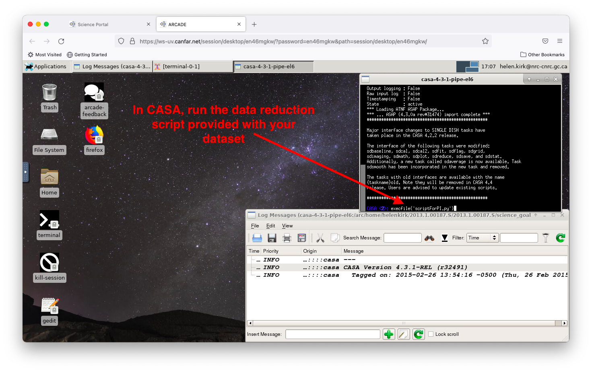
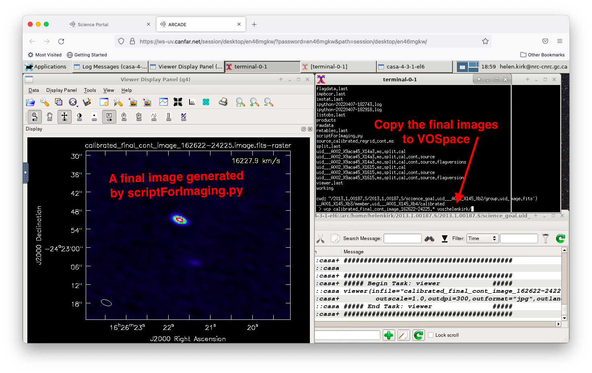

Example: reduce and image data¶
This tutorial walks through an example of reducing and imaging and ALMA dataset, and copying the final images to a personal computer. First, you need to download your ALMA data onto your Desktop Session. See here or here for tutorials on how to download data directly from the ALMA Science Archive, or here for instructions on how to transfer files from your personal computer or VOSpace to the Desktop Session, if you already have your ALMA data downloaded there.
Next, open a CASA container (see this tutorial)
with the version that you need to run.
Then, start CASA in either interactive or pipeline mode, depending on
what is required for your reduction script, by typing casa or
casa --pipeline
Note: The version of CASA originally used to reduce your dataset can usually be found listed in the log files and/or near the top of the reduction scripts. At present, it is generally recommended that you use the same version of CASA to reduce the data as was originally used. The presence of scripts with ‘pipe’ in their names in the script directory indicate that CASA must be initiated in pipeline mode.

Once you have started CASA, run the data reduction script (usually
called scriptForPI.py) by typing execfile('scriptForPI.py')

After the reduction script runs, you will find the calibrated measurement
set(s) in the calibrated/ directory. The scriptForImaging.py script that
is usually distributed with the dataset will help you to image your dataset.
Usually, this script needs to be copied into the calibrated/ directory
before running it. In some instances, you may need to start up a different
version of casa to run the script. In the example shown here, the calibration
script uses the pipeline version of CASA (‘casa-4.3.1-pipe’), while the
imaging script uses the interactive version of CASA (‘casa-4.3.1’), and
these two CASA versions were distributed independently with the names
as noted in parenthesis. Thus, to image the data, you would need to open a
new ‘casa-4.3.1’ container and type casa in the prompt.
During imaging, you might find it helpful to open up a regular terminal to view and/or edit the imaging script, for example, to copy and paste the commands one line at a time into casa (see the Using the Clipboard tutorial for more information).

Interacting with the CASA viewer while running the tast tclean, for example, works in the same manner as on a personal desktop machine.

Once imaging and any desired analysis is complete, you can transfer your final files off of the system using one of the many options available to transfer files.

In the example above, a small subset of files are being transfered to a personal VOSpace page using the vcp command:
vcp calibrated_final_cont_image_162622-24225.* vos:helenkirk/
Note that the Science Portal is not intended to be used for long-term data storage needs - VOSpace is instead recommended as it has a robust backup system in place.